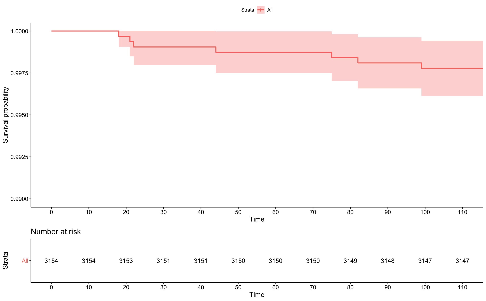
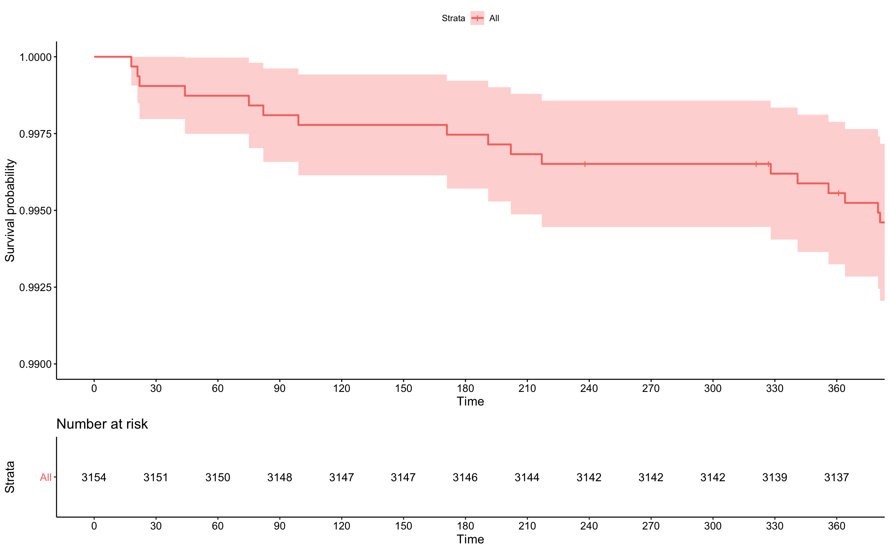

Chapter 6 Kaplan Meier gröf
Kaplan Meier gröf eru langalgengasta myndræna framsetningin á lifunargögnum. Þau eru leið til að lýsa lifunarfallinu myndrænt, þ.e.a.s. hversu hátt hlutfall þátttakanda hefur ekki fengið atburð eftir því sem tíminn líður. Gröfin teikna Kaplan Meier matið í sérhverjum tímapunkti og flatar línur milli punktanna. Gröfin eru látin “falla” á þeim tímapunktum sem atburðir eiga sér stað í samræmi við það hvernig matið er reiknað.
Fyrst um sinn skulum við skoða Kaplan-Meier graf fyrir fyrstu 100 dagana. Það má sjá hér fyrir neðan. Notum tímann í árum time169y:
kmfit <- survfit(Surv(time169,chd69)~1,data=wcgs)
km.plot <- ggsurvplot(kmfit,risk.table = T,break.time.by=10,xlim=c(0,110),
ylim=c(0.99,1))
km.plot 
Grafið byrjar í \(y=1.00\), þegar \(t=0\), enda hefur enginn fengið hjartasjúkdóm við byrjun rannsóknarinnar. Inn á grafið er ég búin að teikna punktalínur þar sem fyrsta “fallið” verður. En það er einmitt við \(t=18\) þegar fyrsti maðurinn fékk hjartasjúkdóm. Þar dettur línan úr 1.00 í 0.9997 eins og við vorum búin að reikna. Næsta “fall” verður við \(t=21\) þegar næsti maður fékk hjartaáfall og svo koll af kolli.
Stækkum nú tímarammann okkar og skoðum Kaplan-Meier graf fyrir fyrstu 365 dagana:
kmfit <- survfit(Surv(time169,chd69)~1,data=wcgs)
km.plot <- ggsurvplot(kmfit,risk.table = T,break.time.by=30,xlim=c(0,365),
ylim=c(0.99,1))
km.plot 
Núna hafa nokkur lóðrétt strik bæst við (sem eru í raun plúsar ef nána er að gáð). Þær merkingar eru þar sem skerðingar eiga sér stað, á þeim tímapunktum hefur einhver þátttakandi hætt í eftirfylgd af einhverjum ástæðum. Munið að Kaplan-Meier metilinn er bara metinn á þeim tímapunktum sem atburðir eiga sér stað, sem í þessu tilfelli eru hjartasjúkdómar, svo grafið breytist ekki á þeim tímapunkti, plúsarnir bætast bara við. Sum tímarit kjósa að fá Kaplan-Meier gröf með slíkum merkingum þegar skerðingar eru en önnur ekki. Það er ætíð hægt að stilla til í R.
Skipunin survfit metur Kaplan Meier metilinn fyrir okkur. Við mötum hana með lifunarhlut til vinstri en hægra megin koma flokkarnir sem við skiptum gögnunum eftir. Til að byrja með höfum við enga skiptingu á gögnunum og setjum þess vegna bara 1 hægra megin i skipunina.